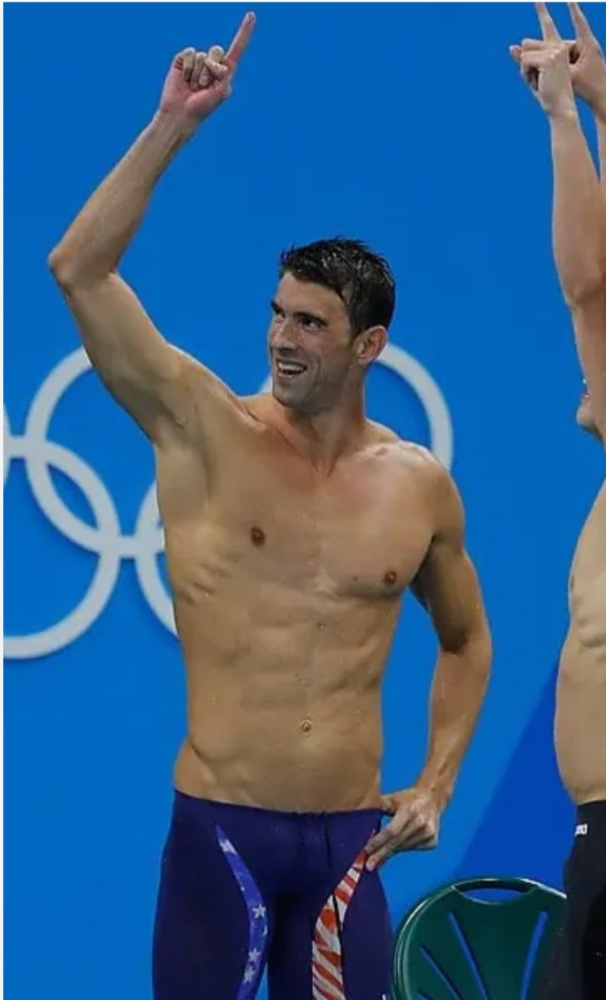
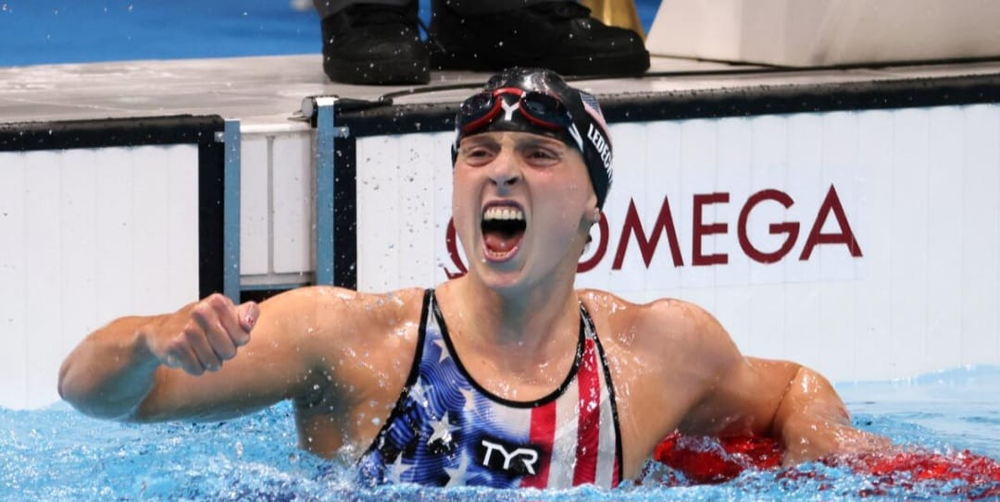
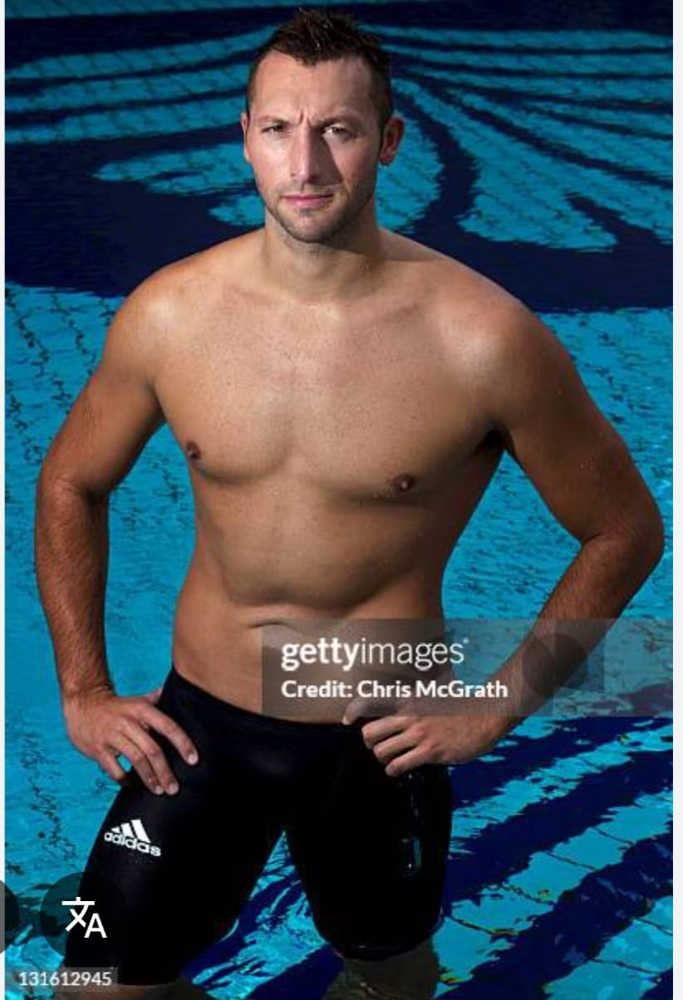

-
🥇 Michael Phelps
Michael Phelps est le nageur le plus célèbre de l’histoire de la natation.
Informations :
Il est originaire des États-Unis.
Il est l’athlète le plus médaillé de l’histoire des Jeux olympiques.
Il a gagné 28 médailles olympiques, dont 23 médailles d’or.
Il est spécialisé dans plusieurs styles de nage comme :
le papillon
le quatre nages
la nage libre.
Il est connu pour sa grande endurance et sa vitesse exceptionnelle dans l’eau.

-
🥈 Katie Ledecky
Katie Ledecky est l’une des nageuses les plus célèbres au monde.
Informations :
Elle est une nageuse américaine.
Elle est spécialisée dans la nage libre sur de longues distances.
Elle a remporté plusieurs médailles d’or aux Jeux olympiques.
Elle détient plusieurs records du monde.
Elle est particulièrement forte dans les courses de 400 m, 800 m et 1500 m nage libre.

🥉 Ian Thorpe
Ian Thorpe est l’un des plus grands nageurs de l’histoire de l’Australie.
Informations :
Il est originaire de l’Australie.
Il a gagné 5 médailles d’or olympiques.
Il était très célèbre pour sa vitesse en nage libre, surtout dans les épreuves de 200 m et 400 m.
Il était surnommé “Torpedo” grâce à sa puissance dans l’eau.
Mark Spitz
Mark Spitz est également l’un des nageurs les plus célèbres de l’histoire.
Informations :
Il est américain.
Lors des Jeux olympiques de 1972, il a remporté 7 médailles d’or dans une seule édition.
Ce record est resté pendant longtemps avant d’être battu par Michael Phelps.
